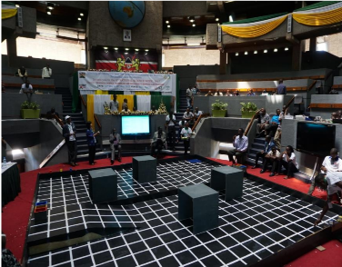
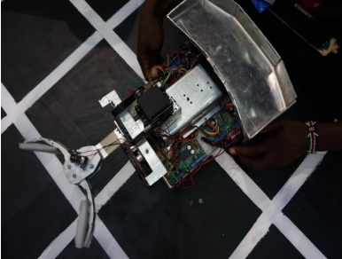
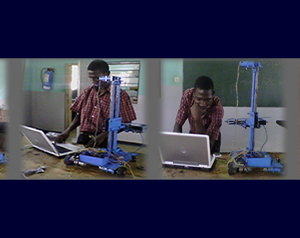
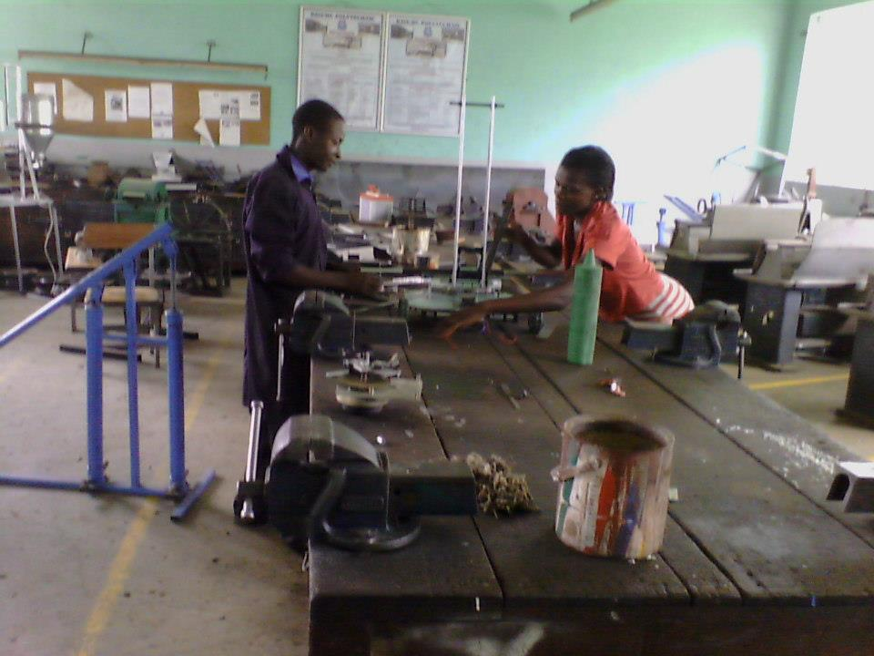
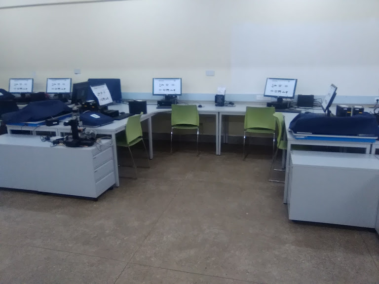
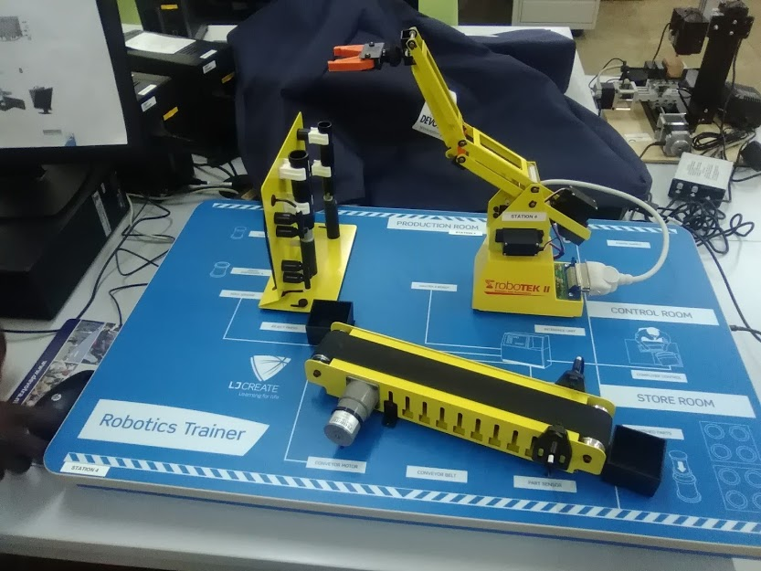
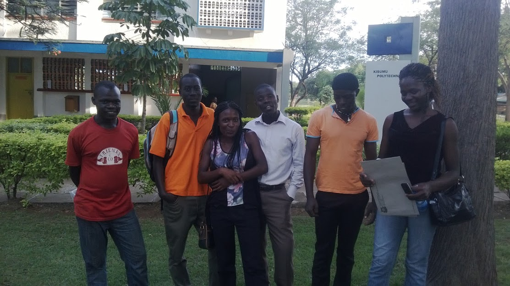
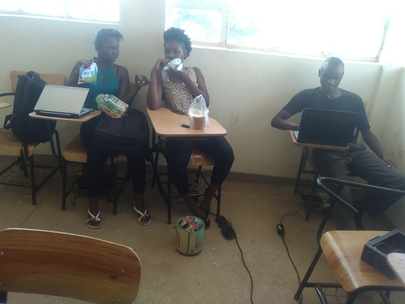
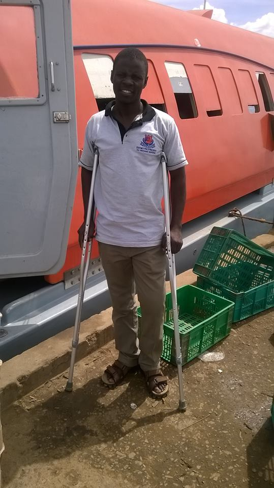

Roboken - Robotics Kenya Championships
Each year, Seconday schools, Universities, Colleges, Technical Institutes, Companies, Private and Government Institutions in Kenya and East Africa come together during the National Science week to showcase their innovative projects, and the National Robotics Championships is always the most spectacular of all these events. To show how important the robotics championships is, the National Commission for Science, Technology and Innovation (NACOSTI) in partnership with Japan International Corporation Agency (JAICA) usually invites the Chief Guest to watch the final match and the match is then replayed during the last closing ceremony of the weeklong event.
|  |  |
| 2017 Robotics Championships at KICC, Nairobi | Kisumu National Polytechnic's "Jakom" Robot |
Needless to say, this event attracts huge crowds from all the stakeholders involved including prospective students and investors looking for opportunities to invest. It is therefore no secret that the institutions will do everything in their power to maximize these opportunities and to stay relevant in the championships.
How it all begun
One warm afternoon in March 2013, I was walking from class towards the hostel when my phone rang. It was Mr Ochieng' Odek, my later to be, most famous Electronics and Electrical Engineering lecturer from Kisumu National Polytechnic. I didn't know him at the time since I was an IT student so we happen to be from different departments.
His call was brief and to the point; I had been chosen as one of the students going to represent the polytechnic at Kiambu Institute of Science and Technology (KIST) for a 2 day Robotics workshop. Alongside me were two other students, Benson Ekapolon and Irene Otito from Mechanical Engineering and Electrical Engineering departments respectively.
|  |  |
| Kevin Oyowe at the Old Electrical Lab, 2013 | Benson and Irene at the Old Mechanical workshop, April 2013 |
Of course those were the old workshops we used to have at Kisumu Poly. Nowadays they have modern labs and workshops that look like this picture on the left, equiped with modern equipments like below.
|  |  |
| Modern Electrical Lab at Kisumu National Polytechnic | Modern Equipments at Kisumu National Polytechnic |
When we talk about robots, people tend to think about perfect shaped plastic objects, probably well built, has a human structure and is very intelligent.
|
They mostly think about something like the picture on the left. So when we started designing our robots from scratch, we couldn't make a similar robot or even build something that comes closer to looking like this. This is probably industrial level. Ours was metallic in nature, with almost all components making it having been sourced from scrap metal, welding and fabrication sites and from the Industrial areas we call Jua kali in Kenya. |
Building a Great Team
The following month, we started working on our first ever game robot. The team had grown so much to include Abner Otieno (Mechanical Engineering), Everlyn Owuor (Electrical Engineering), Dennis Ochieng (Electrical Engineering), Elijah (Mechanical Engineering), and some other key students.

This team went on to create an amazing Robotics club that exists until today. Over the years the team has grown as new members join. Even when old members like myself get placements elsewhere.
Every year, during the Robotics season, we come together to mentor young students and also to learn how to do new things and in a better way than we did while we were starting. It's through the passion that is in each one of us that we sometimes dedicate and sacrifice ourselves just to see every project through.
The robotics project is viewed by many lectures and students alike as a practical experience of it's kind, one you can never learn about in class. No matter your field of study, getting involved in the robotics project will greatly improve your skills and widen your perspective as a student.
Since it's inception, several departments have been invlolved in the robotics project including Electrical Engineering, ICT, Mechanical Engineering, Building and Civil Engineering, and Business Studies departments. The robotics project has been an all inclusive project accomodating both male and female students equally as well as persons with disability.
|  |  |
| Betty Moraa and [other name], robotics partcipants from Business department during a refreshment break, 2017. On the right is Evans Emojong' (ICT) | Dennish Ochieng, Electrical Engineer |
Other Colleges
Soon, our team's hardwork and dedication inspired other institutions around the Lake region to also take up the robotics project seriously. Among the institutions that we have worked with in the past are Sigalagala Polytechnic, Ramogi Institute of Agriculture and Technology (RIAT), Siaya Institute of Technology (SIT), Mawego Technical Training Institute (MTTI), and lately St Joseph's Nyang'oma Technical Training Institute for the Deaf.
|
Nyang'oma Technical Special Training Institute for the deaf went ahead and won an Award during their first time, in the championship's Special Awards category in Nairobi, 2017. Here is their winning robot "Special Master" in action, which the students presented after our mentorship. Two of the students had hearing impairments and the institute had to bring with it their own translator from the college to help them understand the proceedings better. |
Other Countries
The University
In the next chapters, I am going to take you through one of the case studies we selected for this article. We'll show you a step by step chronological history of how we designed and developed two very amazing game robots using purely rudimental materials and techniques.